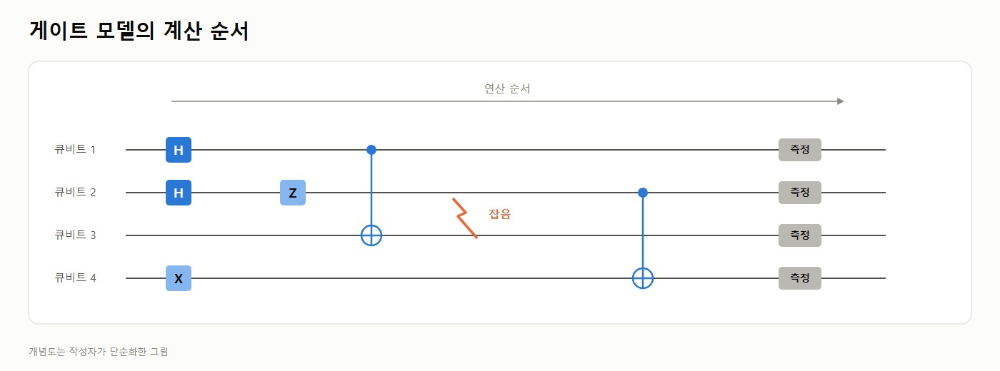
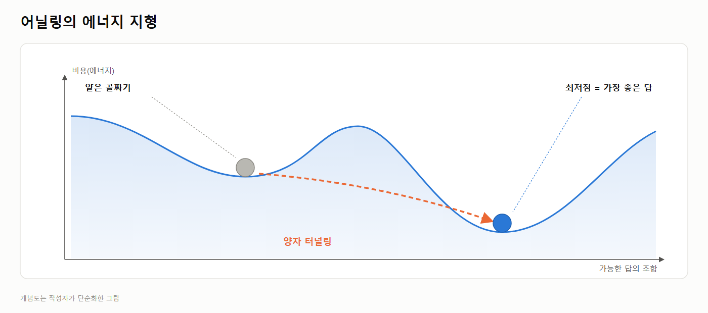
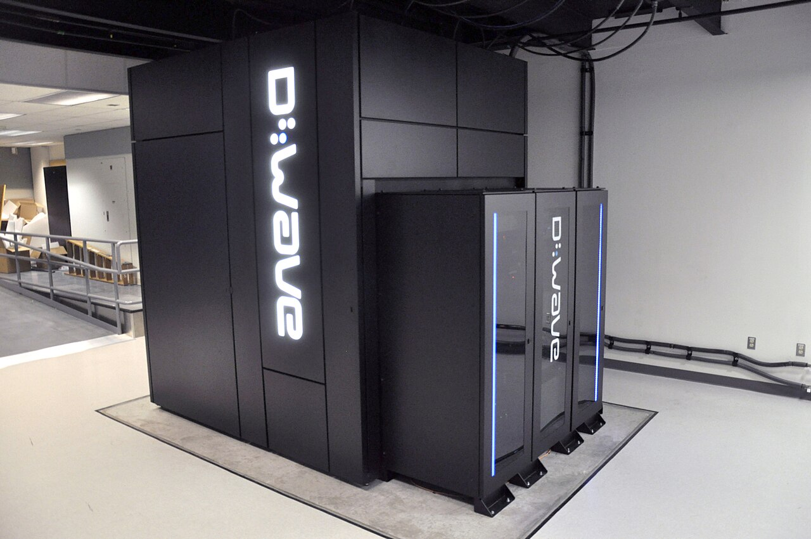
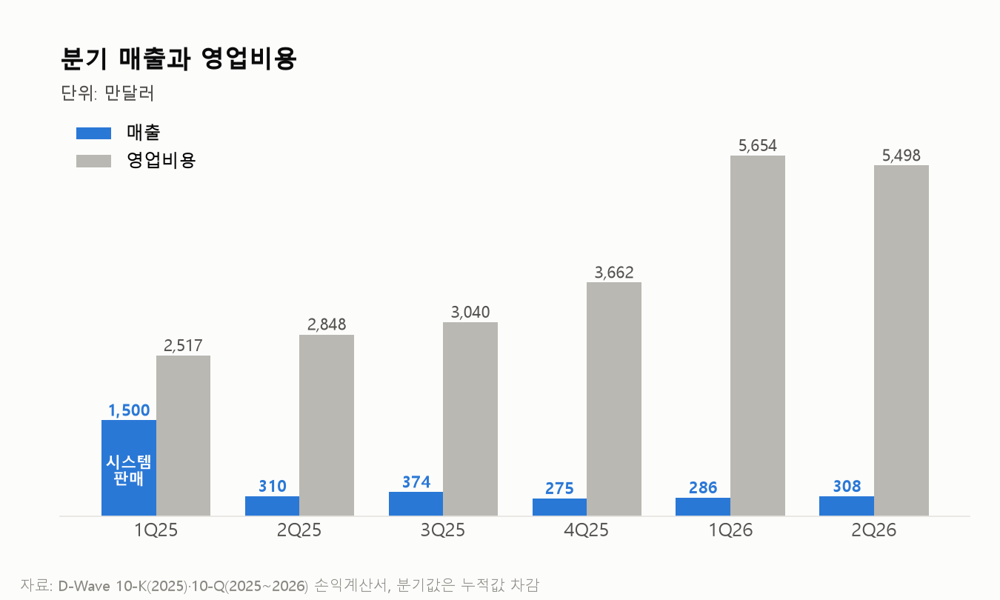
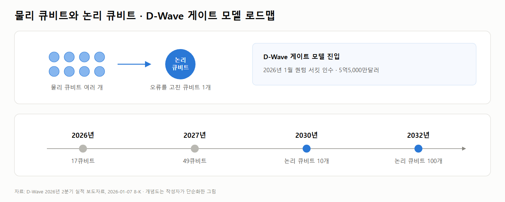
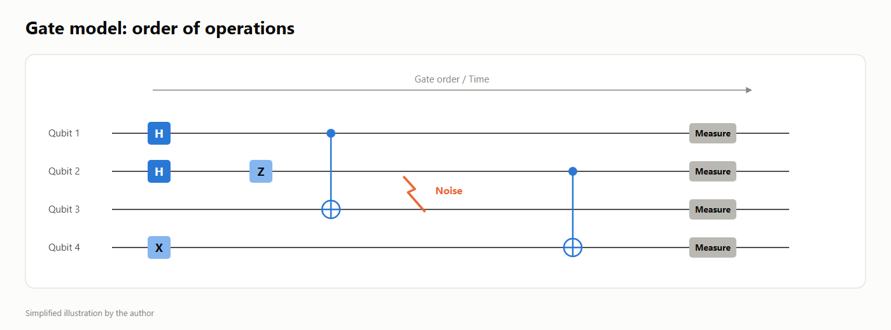
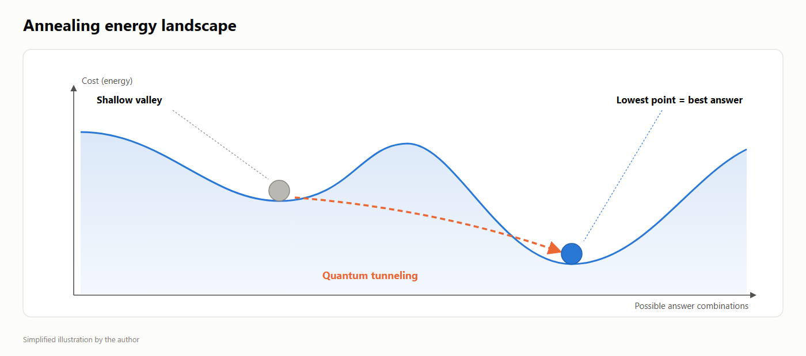
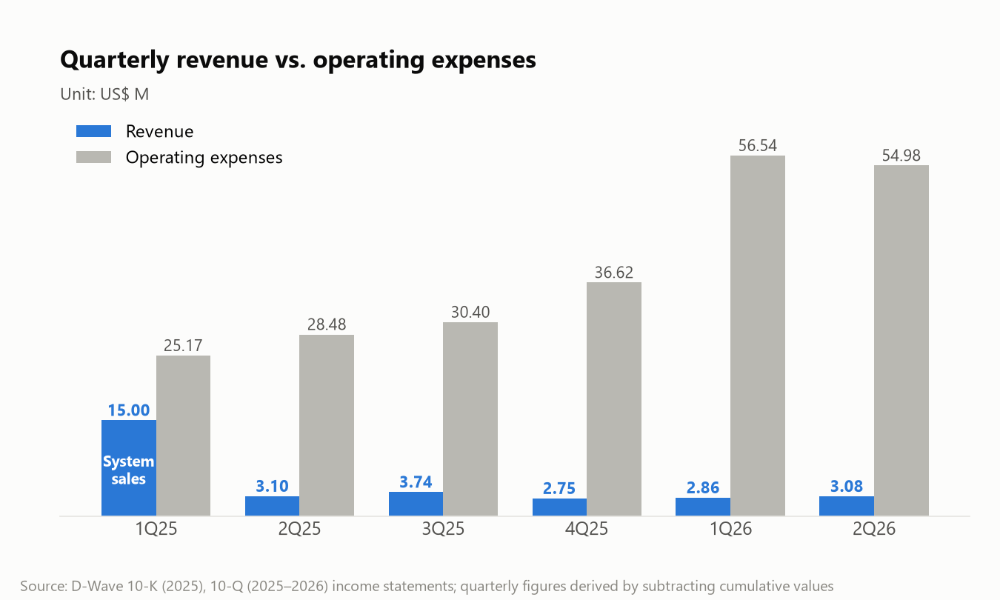
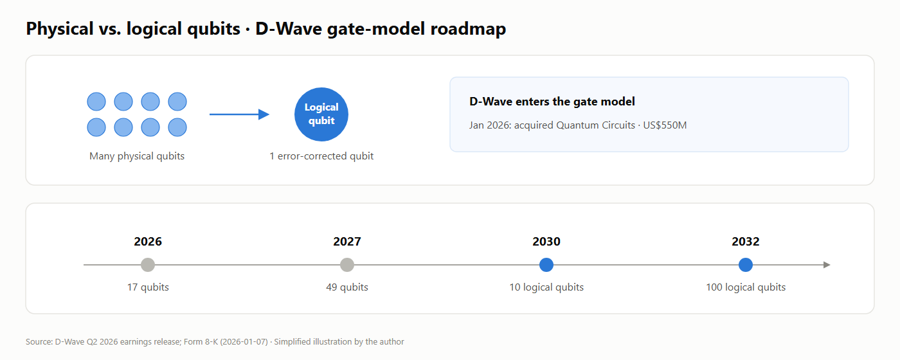

양자컴퓨터를 만드는 방식은 크게 둘인데, 어느 쪽이 이길지가 20년 넘게 안 정해졌습니다. 기술로 답이 안 나오면 남는 건 돈이라, 양쪽 지갑까지 열어 봤습니다.
최초작성 2026-09-14 (v4.4)수치 기준 2026-09-16까지 공시 (6월 말 10-Q 등)
현금·유가증권
5억4,620만달러
2026-06-30
버틸 수 있는 기간
3.7년
IonQ 3.9년 · 리게티 8.5년
연 소진 ÷ 연환산 매출
11.9배
IonQ 1.6배 · 리게티 3.1배
계약잔고
4,070만달러
2025년 매출의 1.66배
1기술 경쟁
3~9번은 양자컴퓨터 기초 설명이라, 아는 내용이면 스킵하면 됩니다.
1. 양자컴퓨터를 만드는 방식은 크게 둘로 나뉨. 게이트 모델과 어닐링(annealing)임.
2. 두 방식은 20년 넘게 갈라져서 경쟁해왔고 아직 승부가 안 났음.
3. 일반 컴퓨터는 모든 정보를 0 또는 1인 비트(bit)로 저장함. 스마트폰 사진도, 엑셀 파일도 결국 0과 1의 긴 줄임.
4. 양자컴퓨터는 큐비트(qubit)를 씀. 큐비트는 측정하기 전까지 0과 1이 겹쳐 있는 상태(중첩)로 있을 수 있고, 여러 큐비트를 서로 묶어(얽힘) 한 덩어리처럼 움직이게 할 수도 있음.
5. 택배 트럭 한 대가 20곳을 들른다면 가능한 순서는 약 243경 가지가 됨. 양자컴퓨터는 중첩과 얽힘을 이용해 답에 다가감.
6. 게이트 모델은 일반 컴퓨터처럼 큐비트에 연산(게이트)을 순서대로 걸어 계산함. 무엇이든 계산할 수 있는 범용 방식이지만, 큐비트가 작은 잡음에도 쉽게 틀려서 오류를 고치는 기술이 먼저 풀려야 함. IBM·구글·IonQ·리게티가 이쪽임.

7. 어닐링은 문제를 산과 골짜기가 있는 지형으로 바꿔 놓고, 공이 가장 낮은 골짜기로 굴러 내려가게 하는 방식에 비유할 수 있음. 가장 낮은 곳이 비용이 가장 적은 답, 예를 들어 가장 짧은 배송 경로가 됨.
8. 다만 비유와 다른 점이 있음. 실제 공은 중간의 얕은 골짜기에 걸려 멈추기 쉽지만, 양자 어닐링은 양자 터널링 현상으로 언덕을 통과해 더 낮은 곳을 찾을 수 있음. 대신 "가장 좋은 조합"을 찾는 최적화 문제에만 쓰고, 범용 계산기는 아님.

9. 정리하면 게이트 모델은 아무 계산이나 할 수 있지만 아직 오류에 약하고, 어닐링은 한 종류의 문제만 풀지만 지금 당장 돌아감.
10. 어닐링에 회사를 통째로 건 곳이 D-Wave임. 연간보고서에 이렇게 적혀 있음. "2004년, 우리는 어닐링 양자컴퓨팅에 집중하기로 결정적이고 의도적인 결정을 내렸다."
11. 그 덕에 제일 먼저 기계를 팔았음. 2011년 록히드마틴과 협업을 시작했고, 이후 구글·NASA·오크리지 국립연구소·로스알라모스 국립연구소·독일 율리히 슈퍼컴퓨팅센터가 이 기계를 썼음. 아래 사진은 2013년 NASA에 설치된 D-Wave Two임.

12. 2018년에는 Leap 클라우드를 열어 업계 처음으로 양자 프로세서를 실시간 공개했고, 2019년에는 폭스바겐이 리스본에서 세계 첫 실시간 양자 응용인 셔틀버스 배차 서비스를 돌렸음. 경쟁자들이 아직 오류 정정 논문을 쓰고 있을 때였음.
13. 그리고 2025년 3월, 그 길의 정점이 나왔음. 스핀글라스라는 자성 물질의 움직임을 계산하는 문제에서, 고전 슈퍼컴퓨터로 100만 년 가까이 걸릴 일을 Advantage2 시제품이 몇 분에 끝냈다고 발표했음. 논문은 사이언스에 실렸음.
14. 그런데 뜬금없이, D-Wave는 2026년 1월에 게이트 모델 회사 퀀텀 서킷을 5억5,000만달러에 인수했음. 한 해 매출 2,459만달러의 22배를 주고 산 것임. 경쟁기술을 큰돈주고 사온 것으로 정리하면 기술로는 아직 승자가 없음.
2자금 체력
15. 기술로 답이 안 나오면 남는 건 돈임. 승부가 길어질수록 버틸 돈이 있는 쪽이 이기기 때문임.
16. D-Wave는 6월 말 현금과 유가증권이 5억4,620만달러임. 2026년 상반기에 영업활동으로 나간 현금이 7,346만달러였으니 1년에 1억4,692만달러 속도임. 나눠 보면 3.7년치 현금밖에 없음.
17. IonQ는 현금과 투자자산이 20억달러로 D-Wave의 3.7배임. 대신 쓰는 속도도 빨라서 상반기에만 2억5,478만달러가 나갔음. 버티는 기간으로 바꾸면 3.9년으로 D-Wave와 비슷함.
18. 리게티는 현금이 5억4,130만달러로 D-Wave와 거의 같음. 그런데 상반기 유출이 3,199만달러뿐이라 8.5년을 버팀.
19. 다만, 1년에 태우는 돈을 연환산 매출로 나누면 D-Wave는 11.9배, IonQ는 1.6배, 리게티는 3.1배임.
20. D-Wave는 1년에 매출 12년치를 태우고 있는 셈임. 세 곳 중 가장 열위함.
21. 최근에는 나아지고 있는 추세이긴함. 2026년 상반기 수주가 3,550만달러로 1년 전 290만달러에서 12배가 됐고, 아직 매출로 잡히지 않은 계약잔고는 6월 말 4,070만달러로 2025년 연매출의 1.66배임. 회사는 이 중 57%가 12개월 안에 매출이 된다고 밝혔음.

22. 찰리 멍거는 "내가 어디서 죽을지만 알면, 거기에는 절대 가지 않겠다"는 말을 자주 했음. 이 방식으로 뒤집어 보면, D-Wave가 망하는 길은 두 가지임.
23. 첫번째는 고전 알고리즘이 계속 따라오는 것임. 회사도 위험요인에 "고전 컴퓨팅의 발전이 예상보다 오래 견실할 수 있고, 그러면 양자 우위가 달성되는 시점이 늦어지거나 아예 달성되지 않을 수 있다"고 적었음.
24. 이 시나리오는 분기 클라우드 매출로 확인 가능할 것으로 보임. 2025년 분기 평균인 138만달러 아래로 돌아가면 시험에서 멈추는 쪽이고, 310만달러 이상으로 올라가면 업무에 자리 잡는 쪽임.
25. 두번째는 게이트방식보다 뒤쳐지는 것임. D-Wave는 2026년 17큐비트, 2027년 49큐비트, 2030년 논리 큐비트 10개, 2032년 100개를 목표로 내놨는데, 그 사이 IBM은 2029년 내결함성 컴퓨터를 목표로 걸어 뒀음.

26. 이 시나리오는 2026년 말까지 17큐비트 시스템이 나오지 않거나 2027년 49큐비트가 밀리면 뒤처지는 쪽이고, 일정대로 나오면서 게이트 모델 매출이 따로 잡히기 시작하면 따라붙는 쪽임.
3한줄 코멘트
게이트 모델과 어닐링 중 누가 이기냐고 물으면, 기술로는 아직 답이 없음. 그러면 누가 더 오래 버틸 수 있는가를 고려해봤을 때 D-Wave 3.7년, IonQ 3.9년, 리게티 8.5년임. 다만, D-Wave는 1년에 매출 12년치를 태우고 있어 세 곳 중 자력으로 메우는 힘이 가장 약함. 정황으로만 보면 D-Wave가 이 승부에서 이기기는 쉽지 않아 보임. D-Wave가 버티기 위해서는 어닐링 기술이 상업적으로 매출을 일으키는지 확인 할 수 있는 클라우드 매출 금액 추이와 게이트 방식에 따라잡히는지 판단할 수 있는 2026년 말 17큐비트 시스템 출시 여부를 모니터링할 필요가 있음.
사진 출처: D-Wave Two(NASA 에임스, 2013) — Nick Bonifas/NASA, Public domain, Wikimedia Commons
Research Note · NYSE QBTS
D-Wave (QBTS): Gate model or annealing, which will win?
There are two main ways to build a quantum computer, and for more than 20 years nobody has settled which one will win. When technology can't give the answer, what's left is money, so I opened up both sides' wallets as well.
Originally written 14 Sep 2026 (v4.4)Figures as of filings through 16 Sep 2026 (incl. June 10-Q)
Cash & securities
546.2US$ M
30 Jun 2026
Cash runway
3.7years
IonQ 3.9 · Rigetti 8.5
Annual burn ÷ revenue
11.9x
IonQ 1.6x · Rigetti 3.1x
Contract backlog
40.7US$ M
1.66x 2025 revenue
1The technology race
Points 3–9 are quantum computing basics; skip them if you already know this.
1. There are two main ways to build a quantum computer: the gate model and annealing.
2. The two approaches have competed along separate paths for more than 20 years, and there is still no winner.
3. An ordinary computer stores all information as bits, each either 0 or 1. A smartphone photo or an Excel file is ultimately a long string of 0s and 1s.
4. A quantum computer uses qubits. Until it is measured, a qubit can sit in a state where 0 and 1 overlap (superposition), and multiple qubits can be tied together (entanglement) so they behave as a single unit.
5. If a delivery truck stops at 20 places, there are about 2.43 quintillion possible orders. A quantum computer uses superposition and entanglement to close in on the answer.
6. The gate model computes by applying operations (gates) to qubits in sequence, much like an ordinary computer. It is a general-purpose approach that can compute anything, but qubits are easily thrown off by tiny amounts of noise, so the technology to correct errors has to be solved first. IBM, Google, IonQ and Rigetti are in this camp.

7. Annealing can be pictured as turning a problem into a landscape of hills and valleys and letting a ball roll down into the lowest valley. The lowest point is the lowest-cost answer, for example the shortest delivery route.
8. But there is a difference from the analogy. A real ball easily gets stuck in a shallow valley on the way down, whereas quantum annealing can pass through the hills by quantum tunneling to find a lower point. In exchange, it is used only for optimization problems that look for "the best combination," and it is not a general-purpose computer.

9. In short, the gate model can compute anything but is still vulnerable to errors, while annealing solves only one kind of problem but works right now.
10. D-Wave is the company that bet itself entirely on annealing. Its annual report puts it this way: "In 2004, we made the critical and deliberate decision to focus on annealing quantum computing."
11. That is why it was the first to sell machines. It began working with Lockheed Martin in 2011, and Google, NASA, Oak Ridge National Laboratory, Los Alamos National Laboratory and Germany's Jülich Supercomputing Centre later used its machines. The photo below is a D-Wave Two installed at NASA in 2013.
12. In 2018 it opened the Leap cloud, the first in the industry to give the public real-time access to a quantum processor, and in 2019 Volkswagen ran the world's first real-time quantum application in Lisbon, a shuttle bus dispatch service. This was at a time when competitors were still writing papers on error correction.
13. Then, in March 2025, that path reached its peak. On a problem that simulates the behavior of magnetic materials called spin glasses, D-Wave announced that an Advantage2 prototype finished in minutes what would take a classical supercomputer nearly a million years. The paper was published in Science.
14. And then, out of the blue, in January 2026 D-Wave bought Quantum Circuits, a gate-model company, for $550 million, 22 times D-Wave's own annual revenue of $24.59 million. If the takeaway is that it paid big money for the competing technology, then technology has not produced a winner yet.
2Cash runway
15. When technology gives no answer, what's left is money, because the longer the contest drags on, the side with the money to hold out wins.
16. D-Wave had $546.2 million in cash and marketable securities at the end of June. Cash used in operating activities in 1H26 was $73.46 million, a pace of $146.92 million a year. Divide one by the other and it has only 3.7 years of cash.
17. IonQ has $2.0 billion in cash and investments, 3.7 times D-Wave. But it also spends faster: $254.78 million went out in the first half alone. Converted into how long it can hold out, that is 3.9 years, similar to D-Wave.
18. Rigetti has $541.3 million in cash, almost the same as D-Wave. But its first-half outflow was only $31.99 million, so it can hold out for 8.5 years.
19. However, dividing each company's annual cash burn by its annualized revenue gives 11.9x for D-Wave, 1.6x for IonQ and 3.1x for Rigetti.
20. D-Wave is effectively burning 12 years' worth of revenue every year. It is the weakest of the three.
21. The trend has been improving recently. Bookings in 1H26 were $35.5 million, 12 times the $2.9 million of a year earlier, and the contract backlog not yet recognized as revenue was $40.7 million at the end of June, 1.66 times 2025 revenue. The company said 57% of it will become revenue within 12 months.

22. Charlie Munger often said, "All I want to know is where I'm going to die, so I'll never go there." Inverting the question that way, there are two paths by which D-Wave fails.
23. The first is classical algorithms continuing to catch up. The company itself wrote in its risk factors: "Advances in classical computing may prove more robust for longer than currently anticipated and could adversely affect the timing of any quantum advantage being achieved, if at all."
24. This scenario should be checkable through quarterly cloud revenue. If it falls back below the 2025 quarterly average of $1.38 million, it points to use stalling at the trial stage; if it rises to $3.1 million or more, it points to annealing taking hold in real operations.
25. The second is falling behind the gate approach. D-Wave has set targets of a 17-qubit system in 2026, 49 qubits in 2027, 10 logical qubits in 2030 and 100 in 2032, while IBM, in the meantime, has set its sights on a fault-tolerant computer by 2029.

26. For this scenario, if a 17-qubit system doesn't come out by the end of 2026 or the 2027 49-qubit target slips, D-Wave is falling behind; if they arrive on schedule and gate-model revenue starts to show up as its own line, it is catching up.
3Bottom line
Ask who wins between the gate model and annealing, and technology has no answer yet. So consider who can hold out longer: D-Wave 3.7 years, IonQ 3.9 years, Rigetti 8.5 years. However, D-Wave is burning 12 years' worth of revenue a year, so its ability to close the gap on its own is the weakest of the three. On the circumstantial evidence alone, D-Wave does not look likely to win this contest. For D-Wave to hold out, it is worth monitoring the trend in cloud revenue, which shows whether annealing is generating commercial revenue, and whether the 17-qubit system launches by the end of 2026, which shows whether the gate approach is overtaking it.
Photo credit: D-Wave Two (NASA Ames, 2013) — Nick Bonifas/NASA, public domain, Wikimedia Commons
$D-Wave(QBTS) 주가 차트D-Wave (QBTS) Price Chart
인터랙티브 일봉 차트 · 마우스로 줌·이동 · 2026-09-16 기준 스냅샷Interactive daily chart · zoom & pan with the mouse · snapshot as of 2026-09-16
주: 정적 스냅샷(2026-09-16 기준, Yahoo Finance 일봉, 미국 달러). 실시간이 아니며 정보 제공용임.Note: static snapshot as of 2026-09-16 (Yahoo Finance daily, US dollars). Not real-time; for information only.
면책 조항 (Disclaimer)
기준일 — 최초작성 2026-09-14. 본문의 모든 수치는 2026-09-16까지 공시된 자료(2026-06-30 기준 분기보고서 등) 기준이며, 이후의 주가·실적·공시 변동은 반영돼 있지 않습니다.
본 보고서는 작성자 개인의 견해를 담은 정보 제공용 자료이며, 특정 종목의 매수·매도·보유를 권유하거나 유도하기 위한 투자 자문 또는 투자 권유가 아닙니다. 작성자는 공인된 투자자문업자·금융투자업자가 아닙니다.
본 자료는 공개된 자료(DART 공시, 금융정보 제공사, 언론 등)를 바탕으로 작성되었으나 그 정확성·완전성·적시성을 보장하지 않으며, 수치·전망·추정치는 오류를 포함할 수 있고 사전 고지 없이 변경될 수 있습니다. 미래 실적·목표주가 등 전망 정보는 불확실성을 내포하며 실제 결과와 다를 수 있습니다.
작성자는 본 자료에서 다룬 종목을 보유하고 있거나 향후 매매할 수 있습니다. 모든 투자의 최종 판단과 책임은 투자자 본인에게 있으며, 작성자는 본 자료의 이용으로 발생하는 어떠한 직·간접적 손실에 대해서도 책임지지 않습니다. 투자 전 반드시 스스로 확인(DYOR)하시고 필요 시 전문가와 상담하시기 바랍니다.
Disclaimer
As of — Originally written September 14, 2026. All figures in this report are based on disclosures available as of September 16, 2026 (including the quarterly report for the period ended June 30, 2026); subsequent changes in price, earnings, or filings are not reflected.
This report reflects the author's personal opinions and is provided for informational purposes only. It is not investment advice, nor a recommendation or solicitation to buy, sell, or hold any security. The author is not a licensed investment adviser or financial professional.
The material is based on publicly available sources (regulatory filings, financial-data providers, news, etc.) but its accuracy, completeness, and timeliness are not guaranteed; figures, projections, and estimates may contain errors and are subject to change without notice. Forward-looking statements such as forecasts and price targets involve uncertainty and may differ materially from actual results.
The author may hold or may in the future trade positions in the securities discussed. All investment decisions and their consequences are solely the reader's own responsibility; the author accepts no liability for any direct or indirect loss arising from the use of this material. Always do your own research (DYOR) and consult a qualified professional where appropriate.